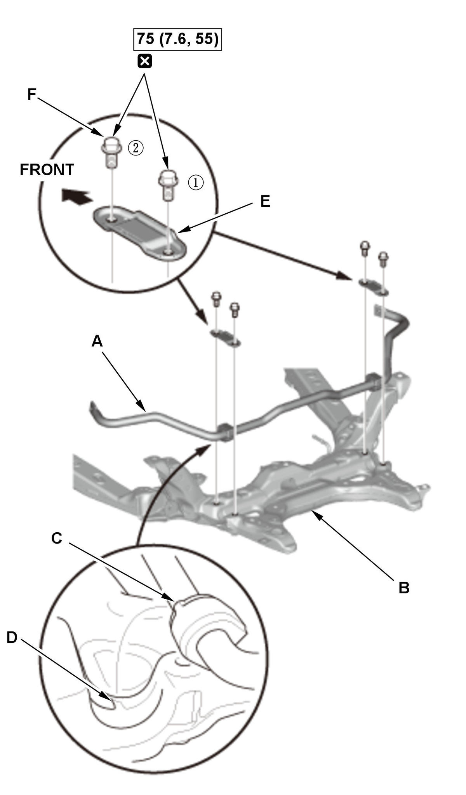

Front Stabilizer Bar Removal and Installation: Installation
NOTE: How to read the torque specifications .
- Stabilizer Bar - Install

Courtesy of HONDA, U.S.A., INC.1. Install the stabilizer bar (A) to the front subframe (B). NOTE: Make sure that the tabs (C) of the stabilizer bushings are properly positioned in the grooves (D) of the subframe.
2. Install the bushing holders (E).
3. Loosely install the front side mounting bolt (F).
4. Tighten the mounting bolts in the sequence shown.
- Steering Gearbox - Install
- Front Wheels - Install
- Wheel Alignment - Check